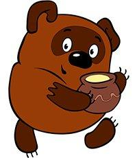

|  |
Вот однажды, гуляя по лесу, Пух вышел на полянку. На полянке рос высокий-превысокий дуб, а на самой верхушке этого дуба кто-то громко жужжал: жжжжжжж… Винни-Пух сел на траву под деревом, обхватил голову лапами и стал думать. Сначала он подумал так: «Это жжжжж неспроста! Зря никто жужжать не станет. Само дерево жужжать не может. Значит, тут кто-то жужжит. А зачем тебе жужжать, если ты — не пчела? По-моему, так!» Потом он ещё подумал-подумал и сказал про себя: «А зачем на свете пчёлы? Для того, чтобы делать мёд! По-моему, так!» Тут он поднялся и сказал: — А зачем на свете мёд? Для того, чтобы я его ел! По-моему, так, а не иначе! И с этими словами он полез на дерево. Он лез, и лез, и всё лез, и по дороге он пел про себя песенку, которую сам тут же сочинил. Вот какую:
Мишка очень любит мёд! Вот он влез ещё немножко повыше… и ещё немножко… и ещё совсем-совсем немножко повыше… И тут ему пришла на ум другая песенка-пыхтелка[1]:
Если б мишки были пчёлами,
|